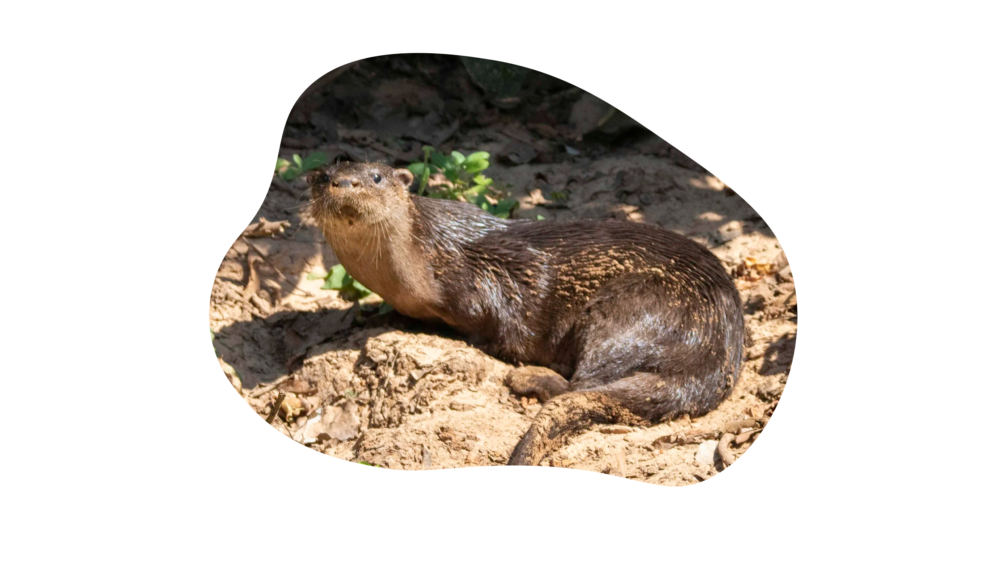

De langstaartotter ook wel zwampotter genoemd (Lontra longicaudis), is een ottersoort uit waterrijke gebieden van Latijns-Amerika.
De langstaartotter is 36-66 cm lang (kop-romp) en heeft een staart van 37-84 cm. Het gewicht bedraagt 5-15 kg. Hoewel vissen en schaaldieren de voornaamste bron van voedsel zijn voor de langstaartotter, worden ook insecten, kleine reptielen, vogels en kleine zoogdieren gegeten. De langstaartotter leeft veelal solitair. Na een draagtijd van ongeveer twee maanden worden meestal twee otters geboren.